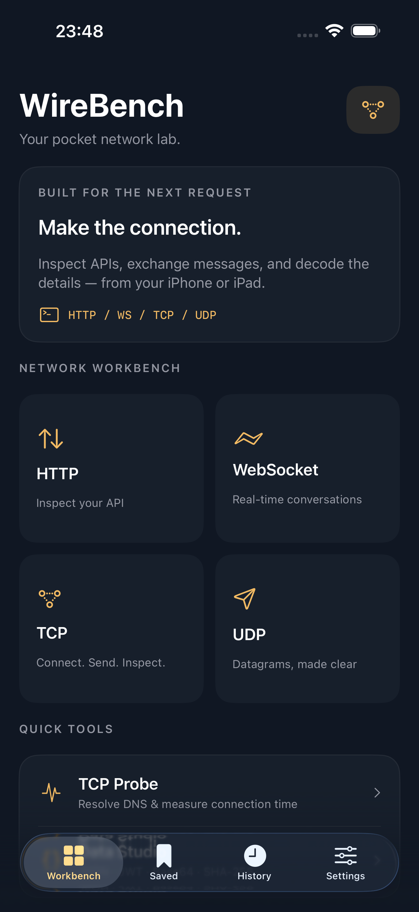

HTTP & HTTPS
Methods, custom headers and request bodies. Inspect status, duration, headers and response content in one place.
THE DEVELOPER'S POCKET WORKBENCH
A thoughtful network toolkit for the moments between your desk and your next idea. Inspect APIs, exchange messages, and decode the details.
For iPhone & iPad · iOS 17 or later · English & 简体中文

LESS FRICTION. MORE CLARITY.
Methods, custom headers and request bodies. Inspect status, duration, headers and response content in one place.
Connect with WS or WSS, send text or binary messages, ping the connection, and follow a timestamped traffic log.
Work directly with an endpoint in UTF-8, HEX or Base64. Enable TLS for TCP when your service needs it.
Resolve DNS and measure connection setup, including an optional TLS handshake. A focused connectivity check.
JSON formatting and validation, JWT decoding, Base64, URL components, SHA-256 and timestamp conversion. Processed on your device.
Save endpoint configurations, revisit recent summaries, and review redacted text before sharing. Light and dark themes fit your day.
No account is needed. Requests go directly to the server you choose. Saved configurations omit request headers, bodies and recognized URL credentials.
Sessions run in the foreground. TCP Probe is not ICMP Ping. JWT decoding does not verify signatures. UDP delivery is not guaranteed. WireBench does not intercept other apps' traffic.